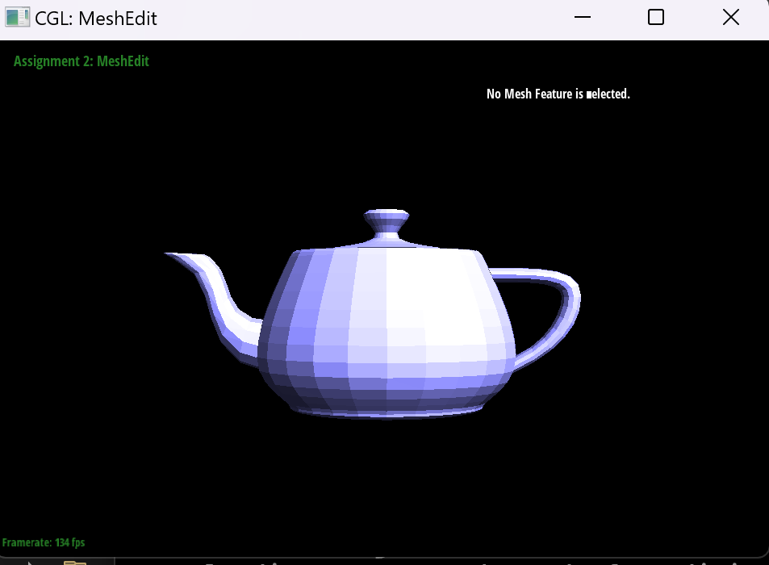
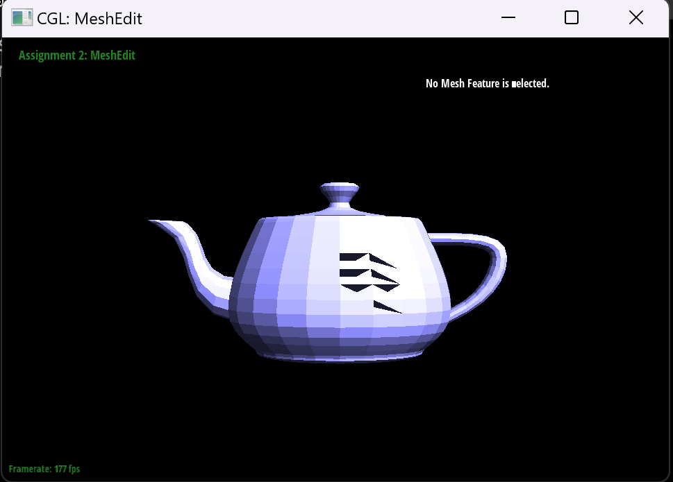

In this homework I built the system to create smooth curves using de Casteljau's algorithm on both 2D and 3D objects, and implemented a method for modeling 3D objects using triangle meshes to enable Phong shading, along with methods to flip and split individual triangles in that mesh in order to be able to upscale an image by creating more triangles that define the shape of the object.
Section I: Bezier Curves and Surfaces
Part 1: Bezier curves with 1D de Casteljau subdivision
De Casteljau's algorithm recursively evaluates points on a Bezier curve at a given parameter value t (between 0 and 1). It starts with n + 1 contorl points for an n degree Bezier curve, then for a parameter t, do linear interpolation between adjacent pairs of points to make n new points, then repeat on the new points until there is only one point, which will be on the bezier curve at param t. The evaluate step function that I implemented takes in a vector of points, creates a new vector for the result, does linear interpolation on each adjacent pair, putting each new point in the return vector, then returns the completed return vector, completing one step of the de Casteljau algorithm.
Control Points.
1 step of de Casteljau.
2nd step.
3rd step.
step 4.
step 5.
Part 2: Bezier surfaces with separable 1D de Casteljau
The de Casteljau algorithm extends to Bezier surfaces by applying the curve algorithm in two dimensions. Start with an nxn grid of control points that define a surface. We first evaluate each row of control points at parameter u, giving n points (one per row). Then, we evaluate the n new points in the v direction, giving a point on the bezier surface. The implementation is done by having an evaluate step function, which does one step of linear interpolation between adjacent points, which is recursively called by the evaluate 1d function until a single point is reached on a curve. The evaluate 1d function is itself called in the evaluate function to be used to create the n points evaulated in the u direction that are then evaluated in the second direction v to find the final point on the surface.
Bezier teapot.bez
Section II: Triangle Meshes and Half-Edge Data Structure
Part 3: Area-weighted vertex normals
To implement the area weighted vertex normals, I started with a zero vector for the weighted normal, then I get the starting half edge for the current vertex, then iterate through all of the half edges (so by extension all faces) around the vertex, getting three vertices, calculating 2 edges from the current vertex to the other vertices, taking the cross product to finnd the face normal, calculating the area, and weighting the normal by area and adding it to the running sum for each face being iterated through. Finally, I normalize the result to get a unit normal vector.
teapot dae no shading.
teapot dae with phong shading using weighted normals
Part 4: Edge flip
First, I checked if the edge was on a boundary by checking if either of it's adjacent faces were boundary faces. Then, I identified and labeled all of the vertices, halfedges, and faces involved in the flip. I then properly updated each vertex's outgoing halfedge, each face's reference halfedge, the main edge's halfedge pointer, and the next, twin, vertex, edge, and face pointers for each halfedge. In order to not miss anything, I made sure to update all pointers even if they didn't change, just in case.

teapot dae base (before flips).
teapot dae with select meshes flipped
Part 5: Edge split
To implement split, I first checked if the edge was on a boundary, and if it wasn't, I labeled all of the existing elements before creating the new ones. I start by creating the vertex at the middle, then the edges, faces, and halfedges. I then set all of the the pointers to their correct assignment for the split, finishing by defining all of the new triangles. I initially struggled a lot with being craful enough about the reassignment, creatign infinite loops and making the mesh go unresponsive when trying to split, so I had to backtrack and restart a couple of times to make sure that I was creating a valid mesh and not just connecting things in circles.
base teapot dae with no changes

teapot dae with selected meshes split
teapot dae with some splits and some flips
Part 6: Loop subdivision for mesh upsampling
TO implement loop subdivision, I used the reccomended method as follows. For the original vertices, I calculated each vertex's new position as a weighted average of it's original position and its neighbors positions, with the weight depending on the degree of the vertex. For each original edge, I computed the position of the midpoint using the weighting scheme from loop subdivision rules. I then split each original edge and placed new vertices at the calculated midpoints, marking vertices as either new original as I went. After splitting, I flipped the edges that connected original vertices to new midpoint vertices. Identifying which vertices to flip proved quite challenging, and I multiple times had to redo the method for checking the flips either because it was incorrect or making the mesh unrespsonsive. Finally, I updated all of the vertices to their new calculated positions. I notice that all sharp edges seem to be smoothed out the more upsampling is done, regardless of whether or not the edges are "supposed" be sharp, like is the case with the cube.
cube before ay upsampling.
cube after multiple rounds of upsampling, shown to be rounded and lopsided.